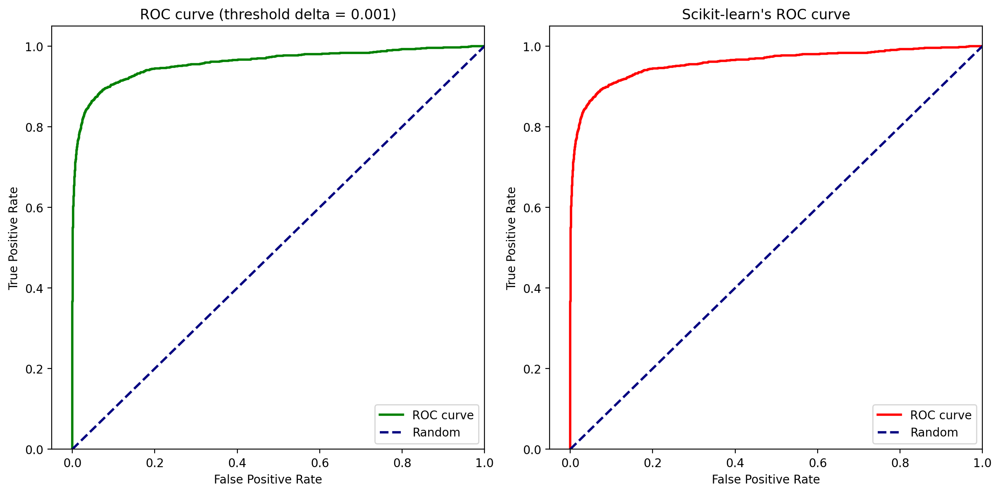
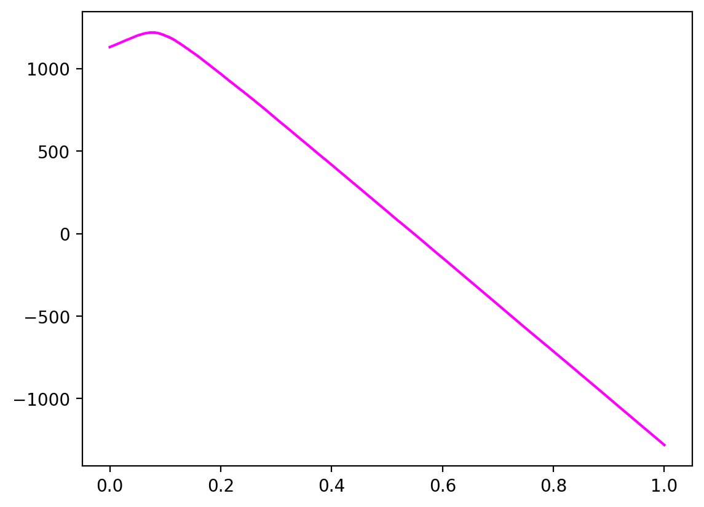
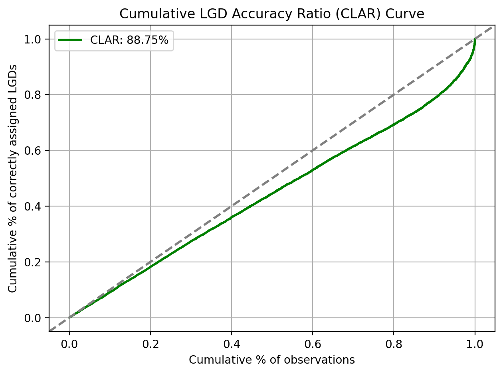

3.3. Discrimination#
ROC Curve (Receiver Operating Characteristic Curve)
A Receiver Operating Characteristic curve, often referred to as the ROC curve, is a graphical plot that illustrates the diagnostic ability of a binary classifier system as its discrimination threshold is varied. The ROC curve is created by plotting the True Positive Rate (TPR) against the False Positive Rate (FPR) at various threshold settings.
import numpy as np
import pandas as pd
np.random.seed(0)
import xgboost as xgb
from matplotlib import pyplot as plt
from sklearn.datasets import make_classification
from sklearn.metrics import confusion_matrix, roc_auc_score, roc_curve
from sklearn.model_selection import train_test_split
%matplotlib inline
%config InlineBackend.figure_format = 'retina'
# Generate a synthetic dataset
X, y = make_classification(
n_samples=50000,
n_features=15,
weights=[0.90, 0.10],
n_classes=2,
n_informative=5,
random_state=42,
)
X, y = pd.DataFrame(X), pd.DataFrame(y)
X.columns = [f"feature_{i+1}" for i in range(len(X.columns))]
ix_train, ix_test = train_test_split(X.index, stratify=y, random_state=62)
# Create an XGBoost model with random forests
model_gbdt = xgb.XGBClassifier(
booster="gbtree",
max_depth=3,
subsample=0.5,
colsample_bynode=0.2,
eval_metric=["logloss", "auc"],
early_stopping_rounds=10,
)
evalset = [(X.loc[ix_train], y.loc[ix_train]), (X.loc[ix_test], y.loc[ix_test])]
# Fit the model to the generated dataset
model_gbdt.fit(X.loc[ix_train], y.loc[ix_train], eval_set=evalset)
[0] validation_0-logloss:0.31868 validation_0-auc:0.74799 validation_1-logloss:0.32003 validation_1-auc:0.73429
[1] validation_0-logloss:0.31147 validation_0-auc:0.77143 validation_1-logloss:0.31330 validation_1-auc:0.75790
[2] validation_0-logloss:0.29090 validation_0-auc:0.80875 validation_1-logloss:0.29277 validation_1-auc:0.79646
[3] validation_0-logloss:0.25391 validation_0-auc:0.87448 validation_1-logloss:0.25929 validation_1-auc:0.85711
[4] validation_0-logloss:0.23867 validation_0-auc:0.87743 validation_1-logloss:0.24538 validation_1-auc:0.86018
[5] validation_0-logloss:0.23249 validation_0-auc:0.87962 validation_1-logloss:0.23899 validation_1-auc:0.86309
[6] validation_0-logloss:0.22075 validation_0-auc:0.88028 validation_1-logloss:0.22876 validation_1-auc:0.86379
[7] validation_0-logloss:0.20951 validation_0-auc:0.88844 validation_1-logloss:0.21681 validation_1-auc:0.87391
[8] validation_0-logloss:0.20340 validation_0-auc:0.89566 validation_1-logloss:0.21060 validation_1-auc:0.88160
[9] validation_0-logloss:0.19451 validation_0-auc:0.90646 validation_1-logloss:0.20321 validation_1-auc:0.89147
[10] validation_0-logloss:0.18822 validation_0-auc:0.90784 validation_1-logloss:0.19768 validation_1-auc:0.89276
[11] validation_0-logloss:0.18632 validation_0-auc:0.90870 validation_1-logloss:0.19591 validation_1-auc:0.89392
[12] validation_0-logloss:0.18271 validation_0-auc:0.91054 validation_1-logloss:0.19230 validation_1-auc:0.89655
[13] validation_0-logloss:0.17151 validation_0-auc:0.91748 validation_1-logloss:0.18161 validation_1-auc:0.90503
[14] validation_0-logloss:0.16778 validation_0-auc:0.92028 validation_1-logloss:0.17812 validation_1-auc:0.90811
[15] validation_0-logloss:0.16652 validation_0-auc:0.92346 validation_1-logloss:0.17703 validation_1-auc:0.91141
[16] validation_0-logloss:0.16468 validation_0-auc:0.92403 validation_1-logloss:0.17518 validation_1-auc:0.91224
[17] validation_0-logloss:0.16159 validation_0-auc:0.92810 validation_1-logloss:0.17206 validation_1-auc:0.91620
[18] validation_0-logloss:0.15828 validation_0-auc:0.93233 validation_1-logloss:0.16814 validation_1-auc:0.92143
[19] validation_0-logloss:0.15637 validation_0-auc:0.93266 validation_1-logloss:0.16663 validation_1-auc:0.92141
[20] validation_0-logloss:0.15157 validation_0-auc:0.93809 validation_1-logloss:0.16189 validation_1-auc:0.92716
[21] validation_0-logloss:0.15019 validation_0-auc:0.94001 validation_1-logloss:0.16036 validation_1-auc:0.92986
[22] validation_0-logloss:0.14763 validation_0-auc:0.94201 validation_1-logloss:0.15787 validation_1-auc:0.93161
[23] validation_0-logloss:0.14683 validation_0-auc:0.94312 validation_1-logloss:0.15725 validation_1-auc:0.93254
[24] validation_0-logloss:0.14649 validation_0-auc:0.94300 validation_1-logloss:0.15711 validation_1-auc:0.93215
[25] validation_0-logloss:0.14497 validation_0-auc:0.94405 validation_1-logloss:0.15576 validation_1-auc:0.93276
[26] validation_0-logloss:0.14438 validation_0-auc:0.94412 validation_1-logloss:0.15540 validation_1-auc:0.93225
[27] validation_0-logloss:0.14372 validation_0-auc:0.94514 validation_1-logloss:0.15473 validation_1-auc:0.93327
[28] validation_0-logloss:0.14293 validation_0-auc:0.94524 validation_1-logloss:0.15389 validation_1-auc:0.93358
[29] validation_0-logloss:0.14181 validation_0-auc:0.94640 validation_1-logloss:0.15264 validation_1-auc:0.93522
[30] validation_0-logloss:0.14124 validation_0-auc:0.94732 validation_1-logloss:0.15194 validation_1-auc:0.93615
[31] validation_0-logloss:0.14067 validation_0-auc:0.94754 validation_1-logloss:0.15164 validation_1-auc:0.93659
[32] validation_0-logloss:0.13768 validation_0-auc:0.94923 validation_1-logloss:0.14873 validation_1-auc:0.93882
[33] validation_0-logloss:0.13700 validation_0-auc:0.94980 validation_1-logloss:0.14807 validation_1-auc:0.93935
[34] validation_0-logloss:0.13583 validation_0-auc:0.95112 validation_1-logloss:0.14707 validation_1-auc:0.94033
[35] validation_0-logloss:0.13547 validation_0-auc:0.95109 validation_1-logloss:0.14677 validation_1-auc:0.94021
[36] validation_0-logloss:0.13478 validation_0-auc:0.95185 validation_1-logloss:0.14616 validation_1-auc:0.94084
[37] validation_0-logloss:0.13438 validation_0-auc:0.95207 validation_1-logloss:0.14566 validation_1-auc:0.94175
[38] validation_0-logloss:0.13321 validation_0-auc:0.95237 validation_1-logloss:0.14457 validation_1-auc:0.94193
[39] validation_0-logloss:0.13247 validation_0-auc:0.95248 validation_1-logloss:0.14407 validation_1-auc:0.94214
[40] validation_0-logloss:0.13169 validation_0-auc:0.95313 validation_1-logloss:0.14343 validation_1-auc:0.94244
[41] validation_0-logloss:0.13139 validation_0-auc:0.95371 validation_1-logloss:0.14339 validation_1-auc:0.94261
[42] validation_0-logloss:0.13113 validation_0-auc:0.95391 validation_1-logloss:0.14316 validation_1-auc:0.94302
[43] validation_0-logloss:0.12623 validation_0-auc:0.95643 validation_1-logloss:0.13890 validation_1-auc:0.94591
[44] validation_0-logloss:0.12470 validation_0-auc:0.95712 validation_1-logloss:0.13783 validation_1-auc:0.94638
[45] validation_0-logloss:0.12441 validation_0-auc:0.95745 validation_1-logloss:0.13771 validation_1-auc:0.94619
[46] validation_0-logloss:0.12365 validation_0-auc:0.95841 validation_1-logloss:0.13739 validation_1-auc:0.94652
[47] validation_0-logloss:0.12301 validation_0-auc:0.95895 validation_1-logloss:0.13697 validation_1-auc:0.94669
[48] validation_0-logloss:0.12173 validation_0-auc:0.95932 validation_1-logloss:0.13588 validation_1-auc:0.94721
[49] validation_0-logloss:0.12075 validation_0-auc:0.96029 validation_1-logloss:0.13494 validation_1-auc:0.94837
[50] validation_0-logloss:0.11699 validation_0-auc:0.96234 validation_1-logloss:0.13082 validation_1-auc:0.95033
[51] validation_0-logloss:0.11694 validation_0-auc:0.96240 validation_1-logloss:0.13076 validation_1-auc:0.95039
[52] validation_0-logloss:0.11667 validation_0-auc:0.96245 validation_1-logloss:0.13069 validation_1-auc:0.95027
[53] validation_0-logloss:0.11653 validation_0-auc:0.96258 validation_1-logloss:0.13071 validation_1-auc:0.95027
[54] validation_0-logloss:0.11280 validation_0-auc:0.96470 validation_1-logloss:0.12685 validation_1-auc:0.95280
[55] validation_0-logloss:0.11265 validation_0-auc:0.96468 validation_1-logloss:0.12677 validation_1-auc:0.95273
[56] validation_0-logloss:0.11249 validation_0-auc:0.96485 validation_1-logloss:0.12675 validation_1-auc:0.95263
[57] validation_0-logloss:0.11175 validation_0-auc:0.96511 validation_1-logloss:0.12645 validation_1-auc:0.95280
[58] validation_0-logloss:0.11159 validation_0-auc:0.96528 validation_1-logloss:0.12644 validation_1-auc:0.95299
[59] validation_0-logloss:0.11053 validation_0-auc:0.96588 validation_1-logloss:0.12551 validation_1-auc:0.95360
[60] validation_0-logloss:0.10953 validation_0-auc:0.96661 validation_1-logloss:0.12410 validation_1-auc:0.95492
[61] validation_0-logloss:0.10929 validation_0-auc:0.96669 validation_1-logloss:0.12410 validation_1-auc:0.95474
[62] validation_0-logloss:0.10884 validation_0-auc:0.96690 validation_1-logloss:0.12409 validation_1-auc:0.95455
[63] validation_0-logloss:0.10867 validation_0-auc:0.96707 validation_1-logloss:0.12413 validation_1-auc:0.95441
[64] validation_0-logloss:0.10714 validation_0-auc:0.96794 validation_1-logloss:0.12296 validation_1-auc:0.95527
[65] validation_0-logloss:0.10681 validation_0-auc:0.96827 validation_1-logloss:0.12257 validation_1-auc:0.95569
[66] validation_0-logloss:0.10661 validation_0-auc:0.96830 validation_1-logloss:0.12263 validation_1-auc:0.95542
[67] validation_0-logloss:0.10646 validation_0-auc:0.96841 validation_1-logloss:0.12258 validation_1-auc:0.95531
[68] validation_0-logloss:0.10634 validation_0-auc:0.96859 validation_1-logloss:0.12253 validation_1-auc:0.95553
[69] validation_0-logloss:0.10608 validation_0-auc:0.96867 validation_1-logloss:0.12227 validation_1-auc:0.95580
[70] validation_0-logloss:0.10598 validation_0-auc:0.96875 validation_1-logloss:0.12241 validation_1-auc:0.95576
[71] validation_0-logloss:0.10579 validation_0-auc:0.96898 validation_1-logloss:0.12235 validation_1-auc:0.95585
[72] validation_0-logloss:0.10435 validation_0-auc:0.96956 validation_1-logloss:0.12086 validation_1-auc:0.95663
[73] validation_0-logloss:0.10293 validation_0-auc:0.97004 validation_1-logloss:0.11963 validation_1-auc:0.95723
[74] validation_0-logloss:0.10276 validation_0-auc:0.97012 validation_1-logloss:0.11971 validation_1-auc:0.95694
[75] validation_0-logloss:0.10200 validation_0-auc:0.97053 validation_1-logloss:0.11893 validation_1-auc:0.95774
[76] validation_0-logloss:0.10171 validation_0-auc:0.97062 validation_1-logloss:0.11876 validation_1-auc:0.95785
[77] validation_0-logloss:0.10109 validation_0-auc:0.97073 validation_1-logloss:0.11803 validation_1-auc:0.95804
[78] validation_0-logloss:0.10071 validation_0-auc:0.97073 validation_1-logloss:0.11815 validation_1-auc:0.95768
[79] validation_0-logloss:0.10010 validation_0-auc:0.97098 validation_1-logloss:0.11758 validation_1-auc:0.95783
[80] validation_0-logloss:0.10006 validation_0-auc:0.97093 validation_1-logloss:0.11756 validation_1-auc:0.95783
[81] validation_0-logloss:0.09989 validation_0-auc:0.97105 validation_1-logloss:0.11743 validation_1-auc:0.95805
[82] validation_0-logloss:0.09962 validation_0-auc:0.97129 validation_1-logloss:0.11725 validation_1-auc:0.95794
[83] validation_0-logloss:0.09947 validation_0-auc:0.97167 validation_1-logloss:0.11727 validation_1-auc:0.95787
[84] validation_0-logloss:0.09941 validation_0-auc:0.97172 validation_1-logloss:0.11736 validation_1-auc:0.95782
[85] validation_0-logloss:0.09928 validation_0-auc:0.97186 validation_1-logloss:0.11740 validation_1-auc:0.95779
[86] validation_0-logloss:0.09903 validation_0-auc:0.97202 validation_1-logloss:0.11724 validation_1-auc:0.95777
[87] validation_0-logloss:0.09891 validation_0-auc:0.97198 validation_1-logloss:0.11712 validation_1-auc:0.95784
[88] validation_0-logloss:0.09873 validation_0-auc:0.97225 validation_1-logloss:0.11713 validation_1-auc:0.95791
[89] validation_0-logloss:0.09859 validation_0-auc:0.97238 validation_1-logloss:0.11716 validation_1-auc:0.95788
[90] validation_0-logloss:0.09845 validation_0-auc:0.97253 validation_1-logloss:0.11708 validation_1-auc:0.95773
[91] validation_0-logloss:0.09806 validation_0-auc:0.97273 validation_1-logloss:0.11670 validation_1-auc:0.95793
XGBClassifier(base_score=None, booster='gbtree', callbacks=None,
colsample_bylevel=None, colsample_bynode=0.2,
colsample_bytree=None, device=None, early_stopping_rounds=10,
enable_categorical=False, eval_metric=['logloss', 'auc'],
feature_types=None, gamma=None, grow_policy=None,
importance_type=None, interaction_constraints=None,
learning_rate=None, max_bin=None, max_cat_threshold=None,
max_cat_to_onehot=None, max_delta_step=None, max_depth=3,
max_leaves=None, min_child_weight=None, missing=nan,
monotone_constraints=None, multi_strategy=None, n_estimators=None,
n_jobs=None, num_parallel_tree=None, random_state=None, ...)In a Jupyter environment, please rerun this cell to show the HTML representation or trust the notebook. On GitHub, the HTML representation is unable to render, please try loading this page with nbviewer.org.
XGBClassifier(base_score=None, booster='gbtree', callbacks=None,
colsample_bylevel=None, colsample_bynode=0.2,
colsample_bytree=None, device=None, early_stopping_rounds=10,
enable_categorical=False, eval_metric=['logloss', 'auc'],
feature_types=None, gamma=None, grow_policy=None,
importance_type=None, interaction_constraints=None,
learning_rate=None, max_bin=None, max_cat_threshold=None,
max_cat_to_onehot=None, max_delta_step=None, max_depth=3,
max_leaves=None, min_child_weight=None, missing=nan,
monotone_constraints=None, multi_strategy=None, n_estimators=None,
n_jobs=None, num_parallel_tree=None, random_state=None, ...)def get_roc_curve(y_test, y_proba, delta=0.1):
"""
Return the True Positive Rates (TPRs), False Positive Rates (FPRs),
and the threshold values, seperated by delta.
"""
thresh = list(np.arange(0, 1, delta)) + [1]
TPRs = []
FPRs = []
y_pred = np.empty(y_proba.shape)
for th in thresh:
y_pred[y_proba < th] = 0
y_pred[y_proba >= th] = 1
# confusion matrix
(TN, FP), (FN, TP) = confusion_matrix(y_test, y_pred)
TPR = TP / (TP + FN) # sensitivity
FPR = FP / (FP + TN) # 1 - specificity
TPRs.append(TPR)
FPRs.append(FPR)
return FPRs, TPRs, thresh
Here, delta is the difference between each of the thresholds at which ROC curve is calculated.
delta = 0.001
y_proba = model_gbdt.predict_proba(X.loc[ix_test])[:, 1]
FPRs, TPRs, _ = get_roc_curve(y.loc[ix_test], y_proba, delta)
fig, axs = plt.subplots(1, 2, figsize=(12, 6))
# First subplot (Left side)
ax = axs[0]
# Calculate ROC curve for your data
FPRs, TPRs, _ = roc_curve(y.loc[ix_test], y_proba)
# Plot the ROC curve on the first subplot
ax.plot(FPRs, TPRs, color="g", lw=2, label="ROC curve")
ax.plot([0, 1], [0, 1], color="navy", lw=2, linestyle="--", label="Random")
ax.set_xlim([-0.05, 1.0])
ax.set_ylim([0.0, 1.05])
ax.set_xlabel("False Positive Rate")
ax.set_ylabel("True Positive Rate")
ax.set_title(f"ROC curve (threshold delta = {delta})")
ax.legend(loc="lower right")
# Second subplot (Right side)
ax = axs[1]
# Calculate ROC curve for sklearn implementation
FPRs, TPRs, _ = roc_curve(y.loc[ix_test], y_proba)
# Plot the ROC curve on the second subplot
ax.plot(FPRs, TPRs, color="red", lw=2, label="ROC curve")
ax.plot([0, 1], [0, 1], color="navy", lw=2, linestyle="--", label="Random")
ax.set_xlim([-0.05, 1.0])
ax.set_ylim([0.0, 1.05])
ax.set_xlabel("False Positive Rate")
ax.set_ylabel("True Positive Rate")
ax.set_title("Scikit-learn's ROC curve")
ax.legend(loc="lower right")
# Display the subplots
plt.tight_layout()
plt.show()

We can see that implementation of the ROC Curve is aligned with Scikit-Learn and gives consistent results.
Gini score
Now, that we know about ROC curve, AUC score and Gini score are straightforward to understand.
AUC stands for Area under the Curve, which is nothing but the area under the ROC curve formed by the predictions.
As we saw, a totally random prediction will have AUC score
0.5, while a perfect classifier will have AUC score of 1. The Gini score is a rescaled AUC score: Gini=AUC*2-1.Lets check the AUC and Gini score of our model.
auc_score = roc_auc_score(y.loc[ix_test], y_proba)
print(f"AUC score: {auc_score: .4f}")
print(f"Gini score: {auc_score*2-1: .4f}")
AUC score: 0.9580
Gini score: 0.9161
Profit curve
Profit curve is an extension of ROC Curve analysis for cost-sensitive learning.
Prediction |
Default + |
Default - |
|---|---|---|
Predicted Default + |
{0} Correctly Predict Default |
{-avg_profit} Falsely Predict Default |
Predicted Default - |
{-avg_loss} Falsely Predict Non-Default |
{avg_profit} Correctly Predict Non-Default |
# Define cost-benefit matrix based on observed losses and profits
# [tp, fp], [fn, tn]: [Loss incurred, Profit lost, Loss incurred, Profit made]
avg_profit, avg_loss = 1430, 1454
cost_benefit_matrix = np.array([[0, -avg_profit], [-avg_loss, avg_profit]])
print(cost_benefit_matrix)
[[ 0 -1430]
[-1454 1430]]
def standard_confusion_matrix(y_true, y_pred):
"""
Reformat confusion matrix output from sklearn for plotting profit curve.
"""
[[tn, fp], [fn, tp]] = confusion_matrix(y_true, y_pred)
return np.array([[tp, fp], [fn, tn]])
def plot_profit_curve(
cost_benefit_matrix, y_true: np.ndarray, y_proba: np.ndarray, **kwargs
):
"""
Plot profit curve.
Inputs:
- model object
- cost benefit matrix in the same format as the confusion matrix above
- predicted probabilities
- actual labels
- additional kwargs for matplotlib
"""
# Profit curve data
profits = [] # one profit value for each T (threshold)
thresholds = sorted(y_proba, reverse=True)
# For each threshold, calculate profit - starting with largest threshold
for T in thresholds:
y_pred = (y_proba > T).astype(int)
confusion_mat = standard_confusion_matrix(y_true, y_pred)
# Calculate total profit for this threshold
profit = sum(sum(confusion_mat * cost_benefit_matrix) / len(y_true))
profits.append(profit)
# Profit curve plot
plt.plot(np.linspace(0, 1, len(y_true)), profits, **kwargs)
return profits
plot_profit_curve_df = plot_profit_curve(
cost_benefit_matrix,
y.loc[ix_test],
y_proba,
color="fuchsia",
)

Somers' D score
Somers' D, often referred to as Somers' D statistic or Somers' Rank Correlation Coefficient, is a measure of the strength and direction of association between two ordinal variables. In case of binary classification, Somers'D and Gini score mean the same metric. For ordinal rankings, binning is recommended.
from scipy.stats import somersd
from sklearn.datasets import make_regression
from xgboost import XGBRFRegressor
# Create a synthetic regression dataset
X, y = make_regression(n_samples=10000, n_features=25, noise=100, random_state=0)
X, y = pd.DataFrame(X), pd.DataFrame(y)
X.columns = [f"feature_{i+1}" for i in range(len(X.columns))]
ix_train, ix_test = train_test_split(X.index, test_size=0.2, random_state=62)
xgb_rf = XGBRFRegressor(n_estimators=100, max_depth=10)
xgb_rf.fit(X.loc[ix_train], y.loc[ix_train])
XGBRFRegressor(base_score=None, booster=None, callbacks=None,
colsample_bylevel=None, colsample_bytree=None, device=None,
early_stopping_rounds=None, enable_categorical=False,
eval_metric=None, feature_types=None, gamma=None,
grow_policy=None, importance_type=None,
interaction_constraints=None, max_bin=None,
max_cat_threshold=None, max_cat_to_onehot=None,
max_delta_step=None, max_depth=10, max_leaves=None,
min_child_weight=None, missing=nan, monotone_constraints=None,
multi_strategy=None, n_estimators=100, n_jobs=None,
num_parallel_tree=None, objective='reg:squarederror',
random_state=None, reg_alpha=None, ...)In a Jupyter environment, please rerun this cell to show the HTML representation or trust the notebook. On GitHub, the HTML representation is unable to render, please try loading this page with nbviewer.org.
XGBRFRegressor(base_score=None, booster=None, callbacks=None,
colsample_bylevel=None, colsample_bytree=None, device=None,
early_stopping_rounds=None, enable_categorical=False,
eval_metric=None, feature_types=None, gamma=None,
grow_policy=None, importance_type=None,
interaction_constraints=None, max_bin=None,
max_cat_threshold=None, max_cat_to_onehot=None,
max_delta_step=None, max_depth=10, max_leaves=None,
min_child_weight=None, missing=nan, monotone_constraints=None,
multi_strategy=None, n_estimators=100, n_jobs=None,
num_parallel_tree=None, objective='reg:squarederror',
random_state=None, reg_alpha=None, ...)predictions = xgb_rf.predict(X.loc[ix_test])
# numpy cross-tab
contingency_table = np.histogram2d(
y.loc[ix_test].values.flatten(), predictions.flatten(), bins=200
)[0]
res = somersd(contingency_table)
somers_d_score = res.statistic
print(f"gAUC score: {(somers_d_score + 1)/2:.2%}")
print(f"Somers' D score: {somers_d_score:.2%}")
gAUC score: 79.83%
Somers' D score: 59.66%
Cumulative LGD Accuracy Ratio (CLAR)
Adapted from VUROCS: Volume under the ROC Surface for Multi-Class ROC Analysis.
For the purpose of discriminatory power assessment, the predicted and realised LGDs are usually mapped to a discretised LGD scale.
def clar(y: np.ndarray, X: np.ndarray) -> float:
"""Calculate Cumulative LGD Accuracy Ratio (CLAR).
CLAR measures the ability of predicted LGD categories to discriminate
realized LGD values according to Ozdemir and Miu 2009.
Args:
y (np.ndarray): Vector of realized LGD values
X (np.ndarray): Vector of predicted LGD values
Returns:
CLAR value for the predicted and realized LGD categories (np.float)
Share of observations as a numpy array (np.ndarray)
Cumulative share of correctly assigned LGD values as a numpy array (np.ndarray)
Raises:
ValueError: If either 'X' or 'y' contains NA values
ValueError: If 'X' and 'y' have different lengths
References:
Ozdemir, B., Miu, P., 2009. Basel II Implementation. A Guide to
Developing and Validating a Compliant Internal Risk Rating System.
McGraw-Hill, USA.
"""
if any(pd.isna(X)) or any(pd.isna(y)):
raise ValueError("Both 'X' and 'y' must not contain NA values")
if len(X) != len(y):
raise ValueError("Both 'X' and 'y' must be of the same length")
nx = len(X)
classes = sorted(list(set(X).union(set(y))), reverse=True)
num = [sum(X == cls) for cls in classes]
cnum = np.cumsum(num)
index = np.argsort(X)[::-1]
X = np.array(X)[index]
y = np.array(y)[index]
corr = np.zeros(len(classes))
for i in range(len(classes) - 1):
if cnum[i] > 0:
corr[i] = np.sum(y[: cnum[i]] >= classes[i])
corr /= nx
corr[-1] = 1
obs = cnum / nx
res = obs[0] * corr[0] / 2
for i in range(1, len(corr)):
res += (corr[i] - corr[i - 1]) * (obs[i] - obs[i - 1]) / 2 + (
obs[i] - obs[i - 1]
) * corr[i - 1]
return res * 2, obs, corr
# generate a synthetic dataset
np.random.seed(0)
# Generate the first variable as random probabilities between 0 and 1
num_samples = 10000
lgd_observed = np.random.rand(num_samples)
# Create the second variable with a specified correlation to the first
correlation = 0.7 # correlation
lgd_predicted = correlation * lgd_observed + (1 - correlation) * np.random.rand(
num_samples
)
# Ensure both variables are within the range [0, 1]
lgd_observed = np.clip(lgd_observed, 0, 1)
lgd_predicted = np.clip(lgd_predicted, 0, 1)
clar_score = clar(lgd_observed, lgd_predicted)[0]
print(f"CLAR: {clar_score:.4%}")
CLAR: 88.7468%
plt.figure()
plt.plot(
clar(lgd_observed, lgd_predicted)[1],
clar(lgd_observed, lgd_predicted)[2],
color="g",
linewidth=2,
label=f"CLAR: {clar_score:.2%}",
)
# Add a horizontal line representing perfect discrimination
plt.axline((0, 0), slope=1, linestyle="--", linewidth=2, color="gray")
plt.xlabel("Cumulative % of observations")
plt.ylabel("Cumulative % of correctly assigned LGDs")
plt.title("Cumulative LGD Accuracy Ratio (CLAR) Curve")
plt.legend()
plt.grid(True)
plt.tight_layout()
plt.show()
